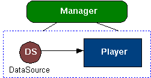

Basic Concepts: Protocol and Content Handling
Basically, multimedia processing can be broken into two parts:Protocol handling refers to reading data from a source (such as a file, capture device, or streaming server) into a media processing system. Content handling usually requires processing the media data (parsing or decoding, for example) and rendering the media to output devices such as an audio speaker or video display.
- Handling the data delivery protocol
- Handling the data content
Two high-level objects are used in this API: DataSource and Player. Each object encapsulates the two parts of multimedia processing:

A DataSource encapsulates protocol handling. It hides the details of how the data is read from its source, whether the data is coming from a file, streaming server, or proprietary delivery mechanism. DataSource provides a set of methods to allow a Player to read data from it for processing.
- DataSource for protocol handling
- Player for content handling
A Player reads from the DataSource, processes the data, and renders the media to the output device. It provides a set of methods to control media playback and basic synchronization. Players also provide some type-specific controls to access features for specific media types.
A factory mechanism, the Manager, creates Players from DataSources. For convenience, Manager also provides methods to create Players from locators and InputStreams.

API Details
The createPlayer method is the top-level entry point to the API:The urlString fully specifies the protocol and the content of the data:Player Manager.createPlayer(String urlString)The Manager parses the URL and creates a DataSource to handle the specified data delivery protocol. The DataSource derives the content type from the data. The Manager then takes this content type and creates a Player to handle the presentation of the data. The resulting Player is returned for use by the application.<protocol>:<content location>The Player provides general methods to control data flow and presentation, for example:
Fine-grained control is an important feature of the API. Therefore, each Player also provides type-specific controls with the getControls and getControl methods:Player.realize() Player.prefetch() Player.start() Player.setMediaTime(long time)Since each type of media will yield different types of controls from its corresponding Player, the getControls and getControl methods expose features that are unique to a particular media type. For example, for the MIDI type, you can receive a MIDIControl from the Player's getControl method.Control[] Player.getControls() Control Player.getControl(String controlType)
System Properties
MMAPI has some properties that can be queried by System.getProperty(String key). Currently, the following keys are defined:
Key Description microedition.media.version The string returned designates the version of the MMAPI specification that is implemented. For implementations on configurations and profiles that contain java.security.Permissionthe value MUST be "1.2", otherwise the value MUST be either "1.1" or "1.2".supports.mixing Query for whether audio mixing is supported. The string returned is either "true" or "false". If mixing is supported, the following conditions are true:
- At least two tones can be played with
Manager.playTonesimultaneously.Manager.playTonecan be used at the same time when at least onePlayeris playing back audio.- At least two
Playerscan be used to play back audio simultaneously.supports.audio.capture Query for whether audio capture is supported. The string returned is either true or false. If supports.audio.capture is true, audio.encoding must not be nullor empty.supports.video.capture Query for whether video capture is supported. The string returned is either true or false. If supports.video.capture is true, video.encoding must not be nullor empty.supports.recording Query for whether recording is supported. The string returned is either true or false. If supports.recording is true, at least one Player type supports recording. audio.encodings The string returned specifies the supported capture audio formats. Each format is specified in the audio encoding syntax. The formats are delimited by at least one space. If audio capture is not supported, audio.encodingreturnsnull.video.encodings The string returned specifies the supported capture video formats. Each format is specified in the video encoding syntax. The formats are delimited by at least one space. If video capture is not supported, video.encodingreturnsnull.video.snapshot.encodings Supported video snapshot formats for the getSnapshot method in VideoControl. The string returned specifies the supported capture image formats. Each format is specified in the image encoding syntax. The formats are delimited by at least one space. The first format returned is the default. If video snapshot is not supported, video.snapshot.encodingreturnsnull.streamable.contents The string returned specifies the supported streamable content types. Media of these content types will be handled by the Playeras streamable media -- media that is played as the data is received by thePlayer. Playing back media of this type does not require thePlayerto buffer the entire content. The content types are given in the MIME syntax as specified in content types, each delimited by at least one space.
Tone Generation
Tone generation is important for games and other audio applications. On very small devices, it is particularly important since it is likely to be the only form of multimedia capability. In its simplest form, tone generation reduces to a single buzzer or some simple monophonic tone generation. The Manager class provides a top level method to handle this simple form of single tone generation:Manager.playTone(int note, int duration, int volume)The implementation of this method can be mapped directly to a device's hardware tone generator to provide the most responsive sound generation.In addition, the API provides a way to create a specific type of Player for synthesizing tone sequences:
Player p = Manager.createPlayer(Manager.TONE_DEVICE_LOCATOR)The Player created provides a special type of Control, nbsp;ToneControl which can be used for programming a tone sequence. This enables more sophisticated applications written for slightly more powerful devices.The
ToneControlinterface specifies a tone sequence format to be used for programming a tone sequence. In addition, this tone sequence format can also be used as a file format for specifying tone sequences. A file with the ".jts" extension must be used to store tone sequences in this format."audio/x-tone-seq"designates the MIME type for this format.
Camera
MMAPI provides support for a camera. From the API point of view, a camera attached to a device doesn't really differ from any other video content. Camera has a special locator "capture://video" that is used to create its Player. An application uses VideoControl to display the view finder on the screen and take pictures.VideoControl.getSnapshot(String imageType) is used to capture a camera's picture. The
imageTypeparameter specifies the format of the snapshot. The video.snapshot.encodings key can be used to query the supported snapshot formats from the system.Scenario 11 shows how to use the camera, and Manager documents different locators for creating the camera's Player.